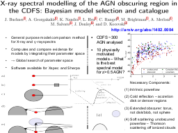

(back to all presentations)Table of contents |
Author: Johannes Buchner Homepage: http://astrost.at/istics/ Further information: General purpose model comparison method for X-ray and γ-ray spectra0.5 AGN? Necessary Components: Intrinsic powerlaw Cold reflection – accretion disk or denser regions Extended obscurer: torus, not disk/blob, not sphere Soft scattering unobscured powerlaw – Thomson scattering off ionized clouds"> |